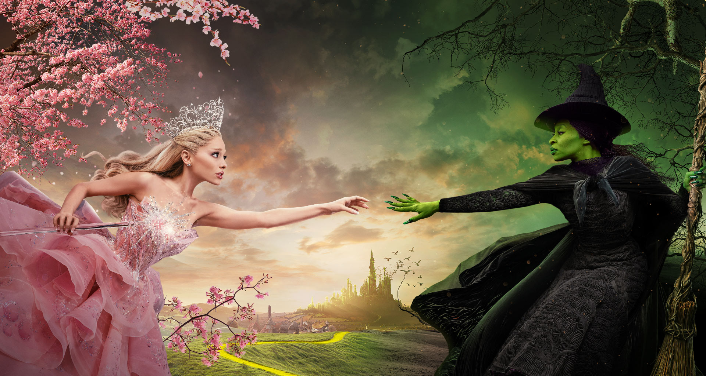

Figura 1: Imagem de divulgação do filme 'Wicked' com Ariana Grande caracterizada de Glinda e Cynthia Erivo caracterizada de Elphaba.
Wicked, também intitulado como Wicked: Part One, é um filme estadunidense-britânico dos gêneros fantasia, comédia dramática e musical, com direção de Jon M. Chu e roteiro de Winnie Holzman e Dana Fox. O filme é a primeira parte de uma adaptação cinematográfica em duas partes do musical homônimo desenvolvido por Stephen Schwartz e Holzman, que por sua vez foi baseado no romance Wicked: The Life and Times of the Wicked Witch of the West (1995), de Gregory Maguire; as obras são de uma adaptação alternativa do romance infantil The Wonderful Wizard of Oz (1900), de L. Frank Baum. Estrelado por Cynthia Erivo e Ariana Grande, com Jonathan Bailey, Michelle Yeoh, Jeff Goldblum, Marissa Bode, Ethan Slater, Bowen Yang, Bronwyn James e Keala Settle em papeis secundários, o filme é ambientado na Terra de Oz e se passa muito antes da chegada de Dorothy Gale do Kansas, onde Elphaba Thropp, uma mulher de pele verde, explora o caminho que a leva a se tornar a Bruxa Má do Oeste, ao mesmo tempo em que forma uma amizade improvável e rivalidade posterior com Galinda Upland, que se tornaria Glinda, a Bruxa Boa do Sul.
Em 2012, a Universal Pictures anunciou o desenvolvimento do filme com Marc Platt como produtor. Após um longo desenvolvimento e vários atrasos ocorridos devido à pandemia de COVID-19, Chu foi contratado para dirigir após a saída de Stephen Daldry, com Erivo e Grande escaladas para seus respectivos papéis em 2021. A fotografia principal começou em dezembro de 2022 na Inglaterra, mas foi pausada de julho até novembro de 2023 devido à greve da SAG-AFTRA de 2023. As filmagens foram retomadas e concluídas em janeiro de 2024. Wicked teve seu lançamento em 21 de novembro de 2024 no Brasil, enquanto nos Estados Unidos ocorreu em 22 de novembro. O filme foi um sucesso de crítica e público, ganhando diversos prêmiso e arrecadando US$ 681,2 milhões em todo o mundo com um orçamento de US$ 150 milhões, tornando-se o filme de maior bilheteria de Chu, o filme relacionado a Oz de maior bilheteria e o sexto filme de maior bilheteria de 2024. Uma sequência, intitulada Wicked: For Good, será lançada em 20 de novembro de 2025.
Wicked no Brasil
Em novembro de 2015 a empresa Time For Fun, empresa líder no mercado de entretenimento, anunciou que realizaria a primeira montagem do espetáculo na América do Sul, em São Paulo, no Teatro Renault. A peça contou com as atrizes Fabi Bang como Glinda, e Myra Ruiz como Elphaba, e teve sua estreia em março de 2016, com temporada estendida até 18 de dezembro. Devido ao seu enorme sucesso, em outubro de 2022 foi anunciado o retorno de Wicked ao Brasil em uma montagem inédita de março à julho de 2023 no Teatro Santander, também em São Paulo. Myra e Fabi receberam o convite dos produtores para retornarem aos seus papéis como protagonistas. O musical teve os ingressos de todas as sessões esgotados faltando mais de um mês para o fim da temporada. O musical irá retornar em uma curta temporada entre março e abril de 2025, com o retorno de Myra e Fabi confirmado. Em 5 de dezembro, durante a CCXP, foi relevado todo o elenco e os ingressos já estão à venda.
O musical será apresentado por Comgás e tem patrocínio de Alelo, EMS e Mobilize, além de apoio de Shell e Automob. Radisson Blu São Paulo e Dona Deôla são, respectivamente, o hotel e o catering oficial. Os ingressos podem ser adquiridos na Tickets For Fun e na bilheteria do Teatro Renault.
Em sua terceira passagem pelo Brasil, o musical acumula mais de 500 mil espectadores. Esteve em cartaz no Teatro Renault, em 2016, quando foi assistido por mais de 340 mil pessoas. Em 2023, passou pelo Teatro Santander, também em São Paulo, recebendo 156 mil pessoas em cinco meses. Essa foi a maior bilheteria na história do teatro.
A nova versão do musical é inédita no País e terá novo elenco, cenários, figurinos, iluminação e efeitos especiais. Fabi Bang e Myra Ruiz, responsáveis pela dublagem em português do filme, estrelam a produção. Wicked é o prelúdio da trajetória de Dorothy e do Mágico de Oz, e apresenta a história não contada da Bruxa Boa e da Bruxa Má do Oeste.
Enredo
Na Terra de Oz, os cidadãos de Munchkinland comemoram a morte da Bruxa Má do Oeste. Glinda, a Boa, aparece para contar a história da Bruxa: nascida de um caso entre a esposa do então governador Thropp e um caixeiro-viajante, ela foi rejeitada desde o nascimento devido à sua pele verde, resultando em uma infância difícil ("No One Mourns the Wicked"). Quando perguntada se ela e a Bruxa Má eram amigas, Glinda responde que realmente se conheciam e reflete sobre o passado delas.
Anos antes, Elphaba Thropp chega à Universidade de Shiz para acompanhar sua irmã mais nova paraplégica, Nessarose ("Dear Old Shiz"). Apesar de não estar matriculada como estudante, Elphaba recebe uma oferta de tutoria privada de Madame Morrible, a Reitora de Feitiçaria, depois de revelar acidentalmente suas habilidades mágicas. Ela aceita, na esperança de que isso lhe permita conhecer o governante de Oz, um mágico que ela idolatra e que ela acredita poder mudar a cor de sua pele ("The Wizard and I"). Para o descontentamento de Elphaba, no entanto, ela é forçada a dividir o quarto com a animada Galinda Upland, com quem entra em constantes conflitos ("What Is This Feeling?").
À medida que o semestre avança, Nessa faz amizade com Boq Woodsman, um munchkin alegre que tem uma paixão por Galinda, enquanto Elphaba conhece o rebelde príncipe Winkie, Fiyero Tigelaar, por quem Galinda está apaixonada. Enquanto isso, o Dr. Dillamond, uma cabra falante que ensina história de Oz, enfrenta discriminação na escola. Ele conta a Elphaba que outros Animais estão perdendo tanto seus direitos civis quanto a habilidade de falar, temendo que ele seja o próximo ("Something Bad"). Elphaba assegura a Dillamond que o Mago resolverá a situação.
Fiyero logo organiza uma grande festa no Ozdust Ballroom. Galinda convence Boq a levar Nessarose para que ela possa ir com Fiyero ("Dancing Through Life"). No Ozdust, Galinda descobre que será admitida no seminário de feitiçaria de Morrible a pedido de Elphaba, como agradecimento por convencer Boq a convidar Nessa. Elphaba é ridicularizada ao usar um chapéu que Galinda lhe deu como provocação; sentindo-se culpada por maltratar Elphaba, Galinda dança com ela ("Ozdust Duet") e depois a transforma com uma mudança de visual ("Popular").
No dia seguinte, o Dr. Dillamond anuncia sua aposentadoria, já que o conselho escolar agora proíbe Animais de lecionarem. Seu substituto, o inescrupuloso professor Nikidik, tenta realizar uma experimentação ao vivo em um filhote de leão assustado, mas Elphaba, junto com Fiyero, intervém, foge do campus da escola e solta o filhote na floresta. Depois de compartilharem um momento, Elphaba lamenta que Fiyero prefira Galinda a ela ("I'm Not That Girl").
Elphaba recebe uma convocação personalizada do Mágico, que ouviu falar de suas habilidades mágicas. Ela e Galinda – que encurta seu nome para "Glinda" em homenagem à pronúncia incorreta de Dr. Dillamond – viajam para a capital de Oz, a Cidade das Esmeraldas, para encontrá-lo ("One Short Day"). Depois que eles se cumprimentam ("A Sentimental Man"), ele pergunta a Elphaba se seu maior desejo é mudar a cor de sua pele, mas ela deseja, em vez disso, ajudar os Animais de Oz. Morrible revela que viajou para presenciar o primeiro encontro entre Elphaba e o Mágico. O Mágico e Morrible encorajam Elphaba a ler o livro de feitiços sagrado, Grimmerie. Seu encantamento faz com que os guardas-macacos do Mago sofram dolorosamente ao brotar asas, para a alegria do Mágico e de Morrible, que se empolgam com a possibilidade de usá-los como espiões. Elphaba percebe que eles são os responsáveis pelos Animais perderem sua humanidade e que o Mago não tem magia real; Morrible usou a magia de Elphaba para liberar o poder do Grimmerie e subjugar ainda mais os Animais para consolidar o domínio do Mágico. Horrorizada, Elphaba foge enquanto Morrible informa os cidadãos de Oz que Elphaba é uma "bruxa má".
Glinda segue Elphaba e implora que ela se reconcilie com Morrible e o Mágico, mas Elphaba decide impedir seus planos. Ela se despede emocionalmente de Glinda, que apoia sua decisão e confirma a profunda amizade entre elas, mas fica para trás, sendo capturada pelos guardas que a interrogam sobre o paradeiro de Elphaba para que possam localizá-la. Elphaba usa o feitiço de voo do Grimmerie para ganhar a habilidade de desafiar a gravidade usando uma vassoura e foge da cidade, escapando dos guardas do Mago e dos macacos alados depois de causar uma queda de energia em toda Oz ("Defying Gravity").
Personagens e Intérpretes
Relação completa dos personagens de Wicked e os atores
que os interpretam nas produções teatrais dos Estados
Unidos e Brasil, bem como na adaptação cinematográfica:
Personagem
Descrição
Atores principais da Broadway
Atuais atores da Broadway
Atores de São Paulo (2016)
Atores de São Paulo (2023)
Atores de São Paulo (2025)
Atores no cinema (2024 & 2025)
Elphaba
Elphaba, a menina de pele verde.
Idina Menzel
Alyssa Fox
Myra Ruiz
Cynthia Erivo
Glinda
Galinda, a melhor amiga de Elphaba na Universidade de Shiz, que eventualmente se torna conhecida como Glinda, a Boa.
Kristin Chenoweth
McKenzie Kurtz
Fabi Bang
Ariana Grande
Fiyero
Um príncipe Winkie e interesse amoroso de Glinda mas acaba se apaixonado por Elphaba.
Norbert Leo Butz
Jordan Litz
Jonatas Faro e André Loddi
Tiago Barbosa
Hipólyto
Jonathan Bailey
O Mágico de Oz
O governante corrupto de Oz.
Joel Grey
John Dossett
Sérgio Rufino
Marcelo Médici
Baccic
Jeff Goldblum
Madame Morrible
Reitora da Universidade de Shiz, onde Elphaba e Galinda estudam.
Carole Shelley
Michele Pawk
Adriana Quadros
Diva Menner
Karin Hils
Michelle Yeoh
Nessarose
Irmã mais nova de Elphaba, que é cadeirante e eventualmente se torna conhecida como a Bruxa Má do Leste.
Michelle Federer
Kimber Elayne Sprawl
Giovanna Moreira
Nayara Venancio
Luisa Bresser
Marissa Bode
Boq
Um Munchkin que encontra Elphaba na Shiz e se apaixona por Glinda.
Christopher Fitzgerald
Jake Pederson
Bruno Fraga
Dante Paccola
Thadeu Torres
Ethan Slater
Doctor Dillamond
Uma cabra falante e professor na Shiz.
William Youmans
César Mello
Cleto Baccic
Arízio Magalhães
Peter Dinklage
Para mais informações sobre o
elenco do filme clique aqui